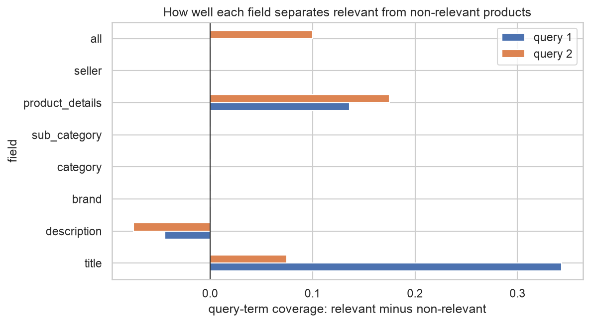
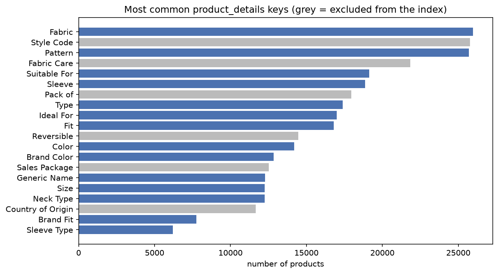
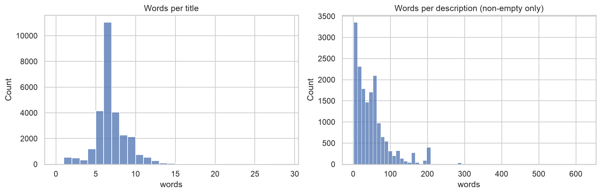
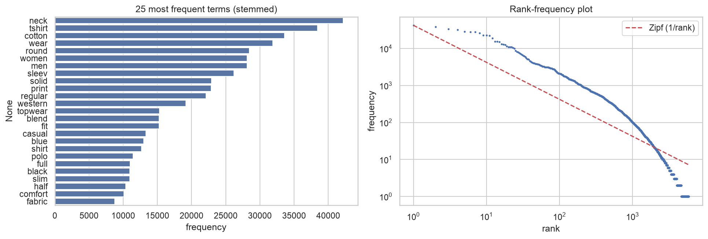
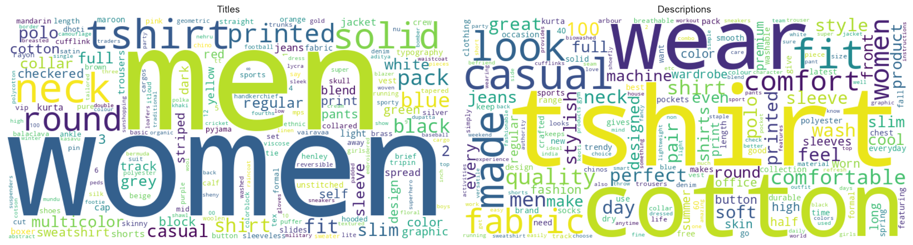
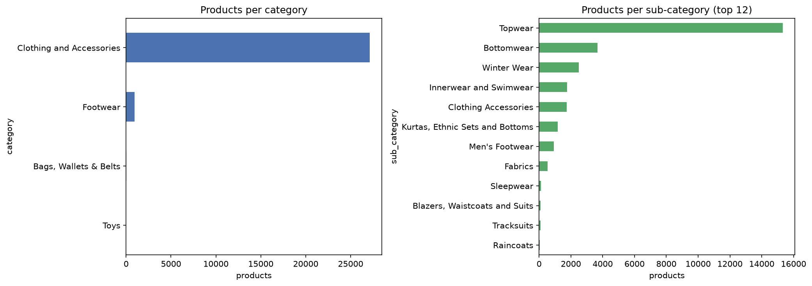
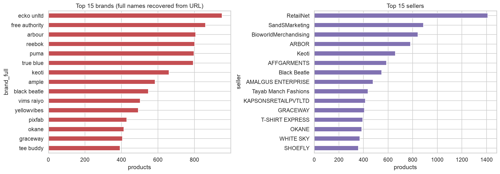
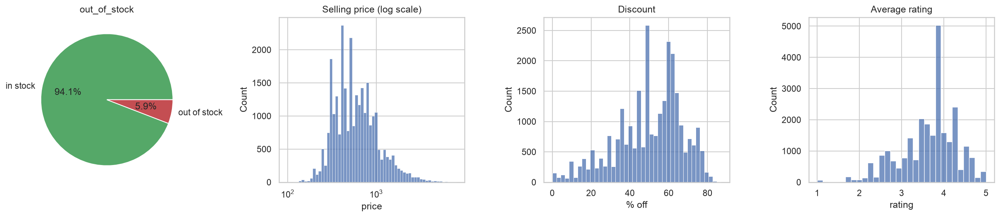

| Students | u233738, u233436, u232597 |
| GitHub | https://github.com/victorbrull/irwa-search-engine |
| Tag | IRWA-2026-part-1 |
The corpus contains 28,080 fashion products crawled from Flipkart, with 17 fields each. In this first part we
prepare the documents, and we describe the data with an exploratory analysis.
Before deciding anything we inspected the raw data, and several of our decisions come from data-quality problems we found
there (section 2). For the decisions about the fields (questions 3 and 4) we used validation_labels.csv as
evidence, as suggested in the statement.
All the code is in the notebook processing_eda.ipynb. The pre-processing functions are in a separate python file,
/preprocessing.py, to be cleaner.
pid is unique (no duplicates), so we use it as the document identifier. Missing values are stored as empty
strings, not null. The most important ones are: description empty in 39.7% of the products, rating missing
in 8.1%, brand in 7.2%, seller in 5.9% and actual price/discount in ~2.8%. Prices, discount and rating are strings
("2,999", "69% off", "3.9") and product_details is a list of
one-key dictionaries. While inspecting the data we found four problems that affect retrieval:
itÃ\x83¢Ã\x82Â\x80…s instead of it's).look.Designed,
Comfort,Skin) and sometimes even the brand is glued to the next word (ECKO UnltdSlim Fit).Pu, REEB, ECKO Unl, True Bl.
A user searching for puma would never match pu. The URL slug, however, starts with the complete brand name
(flipkart.com/puma-full-sleeve-…), so we use it to complete the brand. This works for 24,741 of the 26,071 products
with a brand (94.9%).Ideal For detail. Title and Ideal For agree in 100% of the 16,433 products where both
exist, but the URL agrees with them only ~50% of the time, which is what you would get by chance. In the validation file all
20 products of query 1 say Women in the title and men in the URL, and the labels follow the title. Our conclusion is
that the visible fields were modified and the URL was not, so we never index the URL as text. We only use it to complete the brand
and to give the user a link.The function preprocess_text is applied to every text field and will also be applied to queries:
| # | Step | Reason / detail |
|---|---|---|
| 1 | Encoding repair (ftfy) | fixes the mojibake of problem 1 |
| 2 | ASCII folding (Unicode NFKD) | ’→', é→e, removes symbols such as • and ™ |
| 3 | Split glued words | look.Designed → look. Designed; UnltdSlim → Unltd Slim (problem 2) |
| 4 | Lowercase | Cotton = cotton |
| 5 | Domain normalisation | women's/womens/woman → women; t-shirt/t shirt/tee → tshirt; sweat shirt → sweatshirt; typo regulor → regular |
| 6 | Tokenization with regex [a-z0-9]+ | every other character is a separator, so punctuation is removed in the same step |
| 7 | Stop-word removal (NLTK English) | we checked that the list does not contain men, women, full, slim, blue, which are key query terms |
| 8 | Remove 1-char tokens and product codes | codes that mix letters and digits (1005combo2) are identifiers; pure numbers (100% cotton, size 32) are kept |
| 9 | Stemming (Porter) | sleeves→sleev, jeans→jean; Porter keeps sleeveless different from sleev, which is what we want |
Steps 1–3, 5 and 8 are our additions (the "anything else" point), and each one fixes a problem seen in the data. We used a regex tokenizer
instead of nltk.word_tokenize because word_tokenize keeps punctuation as tokens and handles hyphens inconsistently.
For example, the two validation queries become [women, full, sleev, sweatshirt, cotton] and [men, slim, jean, blue].
To measure the effect of each step, we computed the vocabulary of title + description after adding the steps one by one:
| Pipeline | Vocabulary | Avg. tokens / doc |
|---|---|---|
| whitespace split | 13,521 | 36.2 |
| + lowercase | 10,606 | 36.2 |
| + punctuation removal (regex tokenizer) | 6,503 | 37.6 |
| + encoding fix, glued words, domain normalisation | 6,432 | 36.7 |
| + stop words, codes, 1-char tokens | 6,187 | 25.0 |
| + Porter stemming (final) | 4,717 | 25.0 |
Lowercasing and punctuation removal halve the vocabulary, and stemming reduces it by another 24%. Stop words barely change the vocabulary,
but they remove about a third of the tokens of each document. The normalisation step has a small effect on size (−71 terms), but it fixes
exactly the cases that matter for matching (women's, t-shirt, UnltdSlim).
For every document the processed corpus keeps the 14 required fields (pid, title, description, brand, category, sub_category,
product_details, seller, out_of_stock, selling_price, discount, actual_price, average_rating, url) in a readable, typed form:
original text with only the encoding fixed, prices as numbers, product_details as a dictionary. The stemmed terms are stored
in separate columns (<field>_terms) because they are only used for matching. Missing values are returned as None
instead of "" or 0, so the interface can show "not available". The original (truncated) brand is shown to the user, and the
completed brand (brand_full) is only used for search.
| Option | Pros | Cons |
|---|---|---|
| A. Merge all into one text field | simplest index; any term matches anywhere; works directly with TF-IDF + cosine | all fields weigh the same (a match in a washing instruction counts like one in the title); repeated values make documents longer; no filtering by brand/seller |
| B. Separate fields in the index | each field gets its own weight (title > details > description); field queries and filters (brand:puma); per-field statistics | more complex index and ranking; weights must be tuned; very short fields (brand) have skewed length statistics |
| C. Structured attributes, not text | low-cardinality fields work better as filters or facets | they don't help free-text matching |
To decide, we looked at (1) how distinctive each field is and (2) whether it helps separate relevant from non-relevant products in the validation set.
| Field | Distinct values | Missing | Most common value | Entropy (bits) |
|---|---|---|---|---|
| category | 4 | 0% | Clothing and Accessories (96.6%) | 0.22 |
| sub_category | 24 | 0% | Topwear (54.5%) | 2.28 |
| brand (completed) | 323 | 7.2% | ecko unltd (3.6%) | 6.83 |
| seller | 534 | 5.9% | RetailNet (5.3%) | 7.13 |
category carries almost no information: as a term its IDF is ≈ 0. brand and seller are very distinctive,
but users type brands in queries, not seller names. product_details contains exactly the attributes people search for:
Sleeve (Full Sleeve in 6,372 products), Fit (Slim in 3,831), Fabric, Color, Ideal For. Then, for each validation product,
we computed the fraction of the query terms found in each field (Figure 1).


The result was clear. With a single merged field, all the candidates of query 1 (relevant or not) contain the five query terms somewhere, so the coverage is 1.00 vs 1.00 and the field cannot separate them. The title separates best (0.80 vs 0.46 for query 1), because the non-relevant products are T-shirts that mention sweatshirt or cotton only in other fields. product_details also helps (+0.14 / +0.18): the Sleeve value separates all four T-shirts (Half Sleeve) of query 1, and Fabric explains one of the non-relevant sweatshirts (Polyester Blend). The description is slightly negative, and brand, category, sub_category and seller never contain the query terms.
all_terms = title + description + brand + sub_category + product_details for the basic TF-IDF index
of Part 2 (simple, good recall). category (no discriminative power) and seller (noise for product queries) are not merged.category, sub_category, brand and seller are also kept as raw values for filters/facets.product_details we index only the values (keys such as Fabric appear in almost every product), and we drop keys that don't
describe the product: Style Code, Fabric Care, Sales Package, Country of Origin, Pack of, Reversible, Number of Contents in Sales Package.Note about the labels. They are partly inconsistent. Products with the same title and brand get different labels (Puma Full Sleeve Printed Women Sweatshirt: 1, 1, 0; ECKO Tapered Fit Men Blue Jeans: 0, 1, 1). Two cotton-blend Puma sweatshirts are non-relevant although they look like the relevant ones, and three Women jeans are relevant for men slim jeans blue. No text-only ranking can reproduce these labels perfectly, and we will keep that in mind when we evaluate in Part 2.
They are not indexed as textual terms. As terms, 921 and 920 would be unrelated, while what matters about a number is its order and
distance (cheaper than, rated above), which an inverted index of terms cannot express. Users ask for "under 500" or "best rated", which are
range filters or ranking signals, not exact matches. Number tokens would also add thousands of useless terms. Instead, we parse them into typed
attributes: "2,999" → 2999.0, "69% off" → 69.0, "3.9" → 3.9, out_of_stock → boolean.
Missing values stay missing (never 0): an unrated product is not a product rated 0, and a missing price does not mean free. If the discount is missing but both
prices exist, we compute it. We checked the consistency of the fields: the stated discount matches (actual − selling)/actual within one point for
100% of the products, and no product has a selling price above its actual price. For the next parts we plan to use out_of_stock as a filter or penalty,
selling_price as a range filter and for sorting, and discount and average_rating as ranking signals combined with the text score.
Titles are short and very regular: 6.5 words on average (median 6). Descriptions are empty in 39.7% of products, and the non-empty ones have 49.4 words on average
(median 39, max 623), with 3.2 sentences of 15.3 words. Sentence splitting was done after repairing the glued sentences, otherwise
look.Designed would not be split. After pre-processing, the collection has 1.26M terms and a vocabulary of 5,865 terms (1,216 appear only once).
Per field, the vocabulary is 716 (title), 4,528 (description) and 2,960 (product_details).


The rank-frequency curve follows Zipf's law in the middle ranks. The most frequent terms (neck, tshirt, cotton, wear, round, women, men, sleev) come largely from
product_details. For example, Suitable For: Western Wear appears in 19k products. This matters for the validation queries: cotton is in 71% of the documents and
sleev in 64%, so their IDF is low, and sweatshirt (5%) and jean (9%) will do most of the ranking work.

Titles are dominated by gender and product type (women, men, tshirt, neck, printed, solid), while descriptions use marketing vocabulary (wear, casual, look, comfort, quality, perfect). This is one more argument for giving more weight to the title.


The collection is almost only clothing (96.6%), and more than half is Topwear. There are 323 brands and 534 sellers. The largest brands are ECKO Unltd (951), Free Authority (860), Arbour (806), Reebok (802) and Puma (798). Without completing the brands, the chart would show ECKO Unl, Free Authori or Pu. Among the brands with at least 50 rated products, the best average ratings are Sorang (4.61), PixFab (4.46) and Cotson (4.44); among sellers, SORANG (4.61), EVINCEMARKETERS (4.48) and PixFab (4.46). RetailNet, the largest seller (1,411 products), has a good average of 4.11.

5.9% of the products are out of stock (1,644). Selling prices range from 99 to 7,999 (median 545), and the actual price has a median of 1,199. Discounts are very high (median 52%, maximum 87%, 0% for some products). Ratings go from 1.0 to 5.0 (median 3.8). 329 products have a perfect 5.0 (several out of stock), and since we don't have the number of reviews, these are probably based on few ratings. Ranking only by rating would push them to the top, so in Part 3 we will combine the rating with the text score instead. Among the 10 largest sub-categories, Clothing Accessories has the highest out-of-stock rate (17%) and the best mean rating (3.95), and Blazers, Waistcoats and Suits is the most expensive (median 1,799).
The main lesson of this part was that the data needed more care than the standard pipeline: encoding repair, glued words, truncated brands, and a URL that
contradicts the title. The validation labels showed that a single merged field cannot separate relevant from non-relevant products, while the title and the
product details can. For this reason we keep a term list per field plus a merged field, and keep the numeric fields as typed attributes. The processed corpus is
saved in data/processed_corpus.pkl and will be the input of the inverted index and the TF-IDF ranking of Part 2.
We used Claude (Anthropic) as an assistant during this part: to help write and debug the pre-processing functions and help in the notebook code, to suggest checks on the data (e.g. the comparison between title, URL and Ideal For), and to draft parts of this report. We ran all the code ourselves, checked that every number in the report matches the notebook output, and reviewed and edited the text. The decisions and their justification are our own responsibility.